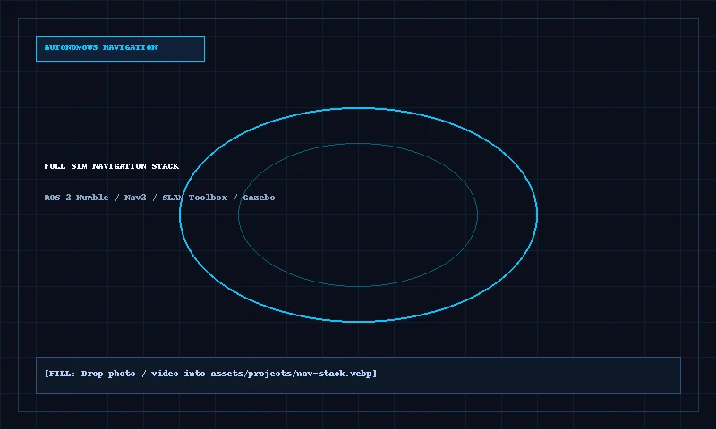

Simulation • Moving to HardwareFull Sim Navigation Stack
[FILL]
Simulation demo video / screenshot and physical base details.
[FILL: Code upon request]
Request walkthrough →
Engineered complete robot description package with modular URDF and Xacro transmission macros. Configured Nav2 stack using Behavior Tree navigator with recovery plugins for dynamic obstacle avoidance. Configured SLAM Toolbox for online synchronous mapping and loop-closure optimization.